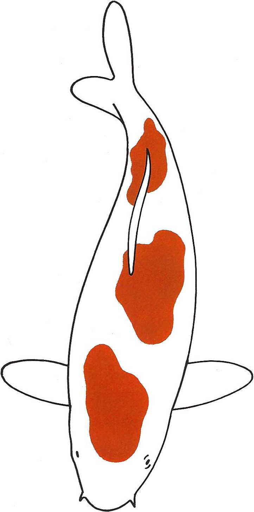
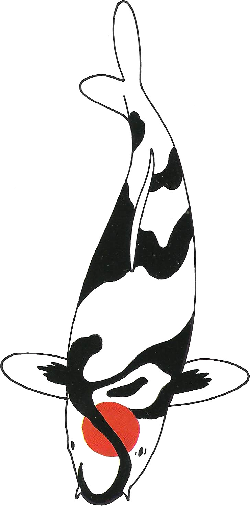
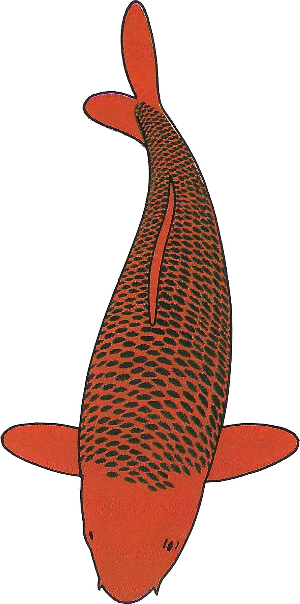

Koi
Naam : Malay (zebra @ Thai)
Variëteit : Shiro Utsuri
Kweker : Omosako
Geslacht : ♀
Leeftijd (2021-08-06) : Tosai
Lengte (2021-08-06) : 30 cm
Lengte (2023-07-02) : 44 cm

(6 augustus 2021)
Naam : Kyu (bol @ Japans)
Variëteit : Tancho Kohaku
Kweker : Takashi Hirasawa
Geslacht : ♀
Leeftijd (2021-08-06) : Nisai
Lengte (2021-08-06) : 50 cm
Lengte (2023-09-24) : 61 cm

(6 augustus 2021)
Naam : Fulmo (bliksem @ Esperanto)
Variëteit : Kohaku
Kweker : Hidemassa
Geslacht : ♀
Leeftijd (2021-08-06) : Nisai
Lengte (2021-08-06) : 50 cm
Lengte (2023-07-02) : 57 cm

(14 augustus 2021)
Naam : Crassus 'Dikkie' (dik @ Latijn)
Variëteit : Chagoi
Kweker : Otsuka
Geslacht : ♀
Leeftijd (2022-03-12) : Nisai
Lengte (2022-03-12) : 49 cm
Lengte (2023-07-02) : 61 cm

(23 april 2022)
Naam : Tacat (gevlekt @ Catalaans)
Variëteit : Sanke
Kweker : Sakai Fish Farm
Geslacht : ♀
Leeftijd (2022-06-26) : Sansai
Lengte (2022-06-26) : 60 cm
Lengte (2023-07-02) : 61 cm

(29 juli 2022)
Naam : Taika (tijger @ Maori)
Variëteit : Hi Utsuri
Kweker : Shinoda
Geslacht : ♀
Leeftijd (2022-08-19) : Nisai
Lengte (2022-08-19) : 45 cm
Lengte (2023-09-24) : 56 cm

(19 augustus 2022)
Naam : Ibala (gevlekt @ Zoeloe)
Variëteit : Showa
Kweker : Isa
Geslacht : ♀
Leeftijd (2022-08-19) : Nisai
Lengte (2022-08-19) : 41 cm
Lengte (2023-09-24) : 54 cm

(19 augustus 2022)
Gezocht
Variëteit : Sandan Kohaku 
Variëteit : Tancho Showa 
Variëteit : Aka Matsuba 